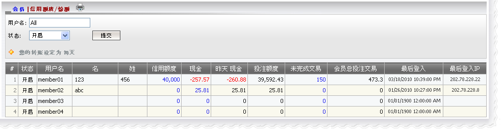

信用额度/余额
定义:
这个功能显示所有会员的信用额度及余额的必要信息, 例如:
- 状态: 开启, 关闭或暂停。
- 信用额度: 代理给予的总会员信用额度。
- 现金: 截至今日的总输赢数额。
- 昨日 现金: 截至昨日的总输赢额。
- 投注额度: 会员可用于投注的总信用额数。
- 未完成交易: 仍在进行中注单的总投注额。
- 会员总投注交易: 仍在进行中和已结算注单的总投注额。
此外, 这个功能也让代理进行以下子功能:
- 点击信用额度数额便可增加或减少给予会员的信用额度。
- 点击昨日现金便可进行转账。
- 点击未完成交易数额, 以查看投注历史及每日账目。

信用额度/余额